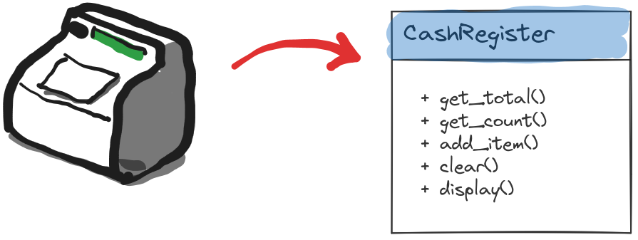
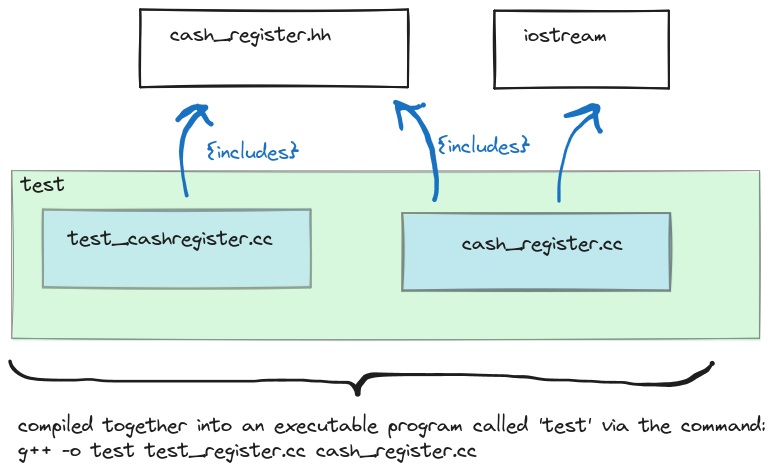

7 Object Orientated Programming in C++
7.1 Introduction
Combine data and functions as a unit. Components of a class are called members. In OOP parlance functions members are called methods
- methods: behaviour of the object
- data members: state state of the object
Concrete objects created from a class that exist during life-time are called instances.
Classes are like new data types, and instance objects are declared just like variables of fundamental types would.
Example
class Account
{
public:
double get_balance() const;
double withdraw(double amount);
private :
double balance = 100; //initialize with default 100
};
Account::get_balance(){return balance;}
Account::withdraw(doulbe amount){balance -= amount;}
Account a1;
a1.withdraw(25);The keyword const in double get_balance() const denotes that get_balance() doesn’t modify the state of the object \(\Rightarrow\) accessor method.
- accessor methods: methods that do not modify the state of the object like
get_balance(). They should be denoted by theconstkeyword as above. - mutator methods: methods that modify the state of the object like
withdraw().
7.2 Encapsulation
- public members of the class is the interface provided for the user of the class.
- private members of the class are used to implement the public interface.
This separation is called encapulsation and information hiding. This facilitates changing the implementation without changing the interface or affecting other programs that use this class.
Usually an improvement of an existing code comes through changing the underlying data structures. If internal representation if kept hidden from the user of the class, than this change will not effect the user.
It is good practice to list public members before private ones, since users reading the class are primarily interested in the interface as opposed to implementation details.
To adhere to the principle of information hiding data members should be always kept private. Accessing or mutating the data members should be provided through a public interface of accessor and mutator member functions, and never directly.
7.3 Separate Compilation
Encapsulation and information hiding nicely leads to the concept of modularization and separate compilation. When interface definitions and implementations of a class are separated in distinct source files, only the files that are modified can be recompiled, other files need not to be.
Consider the situation we want to simulate a cash register machine, with a class that provides the following interface:

We provide the interface for the class ’CashRegister’in a header file:
cash_register.hh
#ifndef CASHR_H
#define CASHR_H
class CashRegister
{
public:
CashRegister();
double get_total() const;
int get_count() const;
void clear();
void add_item(double amount);
void display() const;
private:
int item_count;
double price_total;
};
#endif // !CASHR_hNote the
#ifdef CASHR_H
#define CASHR_H
//... contents of the header file
#endif //CASHR_Hconstruct. This is called a header guard. It is possible that in a project there are many files that use the CashRegister class. When multiple such files are included in another file, the problem will arise that header definitions of CashRegister are included multiple times. As multiple definitions are not legal, this would cause a compiler error. Header guard ensures this, and always should be used.
The implementation of this interface definition is provided separately in a .cpp file:
cash_register.cc
#include "cash_register.hh"
#include <iostream>
CashRegister::CashRegister()
{
item_count = 0;
price_total = 0;
}
int CashRegister::get_count() const {return item_count;}
double CashRegister::get_total() const {return price_total;}
void CashRegister::display() const {
std::cout << "count: " << get_count() << std::endl
<< "sum: " << get_total() << std::endl;
}
void CashRegister::clear()
{
item_count = 0;
price_total = 0;
}
void CashRegister::add_item(double amount)
{
item_count++;
price_total += amount;
}Note that other additional headers needed for the implementation like `
Finally we create test program called test_cashregister.cc with a main() function, that will utilize and test the CashRegister class:
test_cashregister.cc
#include "cash_register.hh"
#include <iostream>
void display_n(CashRegister cr)
{
cr.display();
std::cout << std::endl;
}
int main(int argc, char const *argv[])
{
CashRegister cr1;
display_n(cr1);
cr1.add_item(15.4);
display_n(cr1);
cr1.clear();
display_n(cr1);
return 0;
}Note that test_cashregister.cc only has the interface to CashRegister via the header cash_register.hh but not the actual implementation. This is well intented, since we want to provide the implementation to the compiler as follows:
g++ -o test_cashregister test_cashregister.cc cash_register.ccHow headers are interrelated and compiled together into an executable can be visualised as follows:

The important advantage here is that if the implementation of CashRegister changes, this is reflected solely in cash_register.cc. Thus during recompilation, this file alone needs to be recompiled and linked against test_cashregister.cc. For large software projects and collaborative programming this modularization is essential.
7.4 Constructors & Destructors
Constructors
- Constructor method is called after an object is initialized/created in memory.
- It can defined manually by the programmer, otherwise a default constructor always exists. In case of manual definition it can have a list of arguments, just like any other method.
- When a constuctor is defined manually, the default constructor (one without any arguments must be redefined explicitly by the programmer) \(\Rightarrow\) overloading.
- For class
Aits constructor is calledA(). (Same name as its class) - Has no return value, but doesn’t use keyword
void
Destructors
- The method called before the memory occupied by the object is freed.
- It can be defined by the programmer, otherwise default destructor is created.
- Destructor for class
Ais called~A() - Destructors have no arguments, no return value, do not use
void.
Example:
class Account
{
public :
Account(double amount);
Account(); //default constructor must be now explicitly defined
~Account();
... //rest of class
};
// ... rest of implementations
// initializes account with initial balance of amount
Account::Account(double amount) {balance = amount;}
// overloaded constructors defininig default constructor, which
// initializes account to a default value of 100
Account::Account() {balance = 100;} Then
Account a1;
std::cout << a1.get_balance() << std::endl;
a1.withdraw(100);
std::cout << a1.get_balance() << std::endl;
Account a2(500);
std::cout << a2.get_balance() << std::endl;
a2.withdraw(100);
std::cout << a2.get_balance() << std::endl;prints out
100
0
500
4007.5 Pointers / References to Objects
Pointers or references can provide shared access to objects. Assume that a bank account is shared by two people. With pointers:
//ap1 points to an account object on heap
Account *ap1 = new Account(300);
//ap2 points to the same object
Account *ap2 = ap1;We can access this objects methods via its pointer:
(*ap1).withdraw();Equivalent, and a more common way:
ap1->withdraw(10);Which can be understood as: “follow the pointer ap1 to the object it follows and access the method”.
The changes will be reflected of course via the pointer ap2:
ap1->get_balance()
ap2->get_balance()
//both return the same value of 290Same can be achieved with references:
Account a(20);
Account &b = a;
//both return 20
a.get_balance();
b.get_balance();
//withdraw 5 from a
a.withdraw(5);
/*changes reflected in both,
both return 15: */
a.get_balance()
b.get_balance()